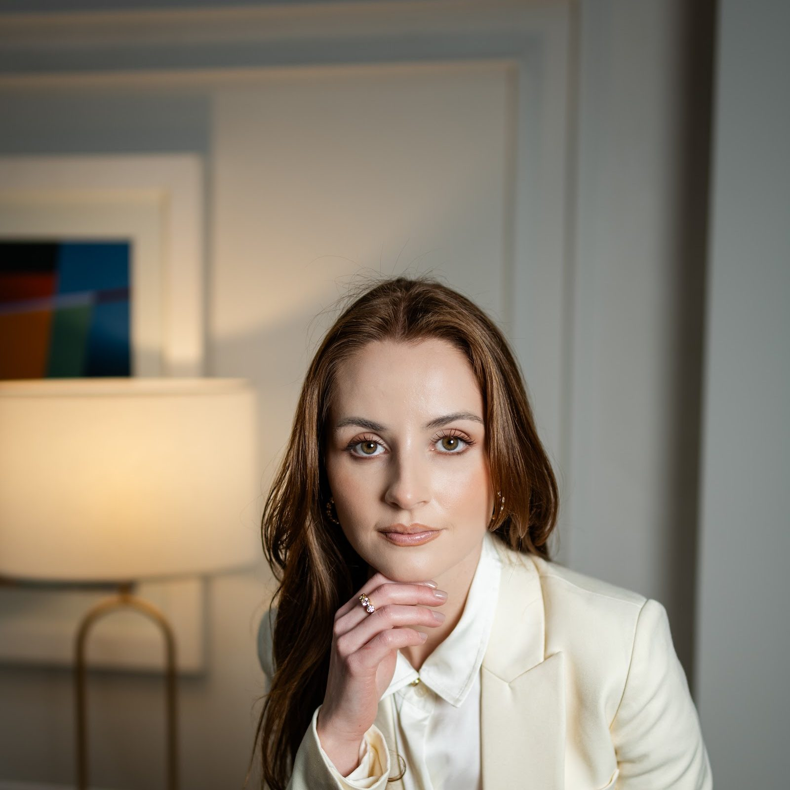
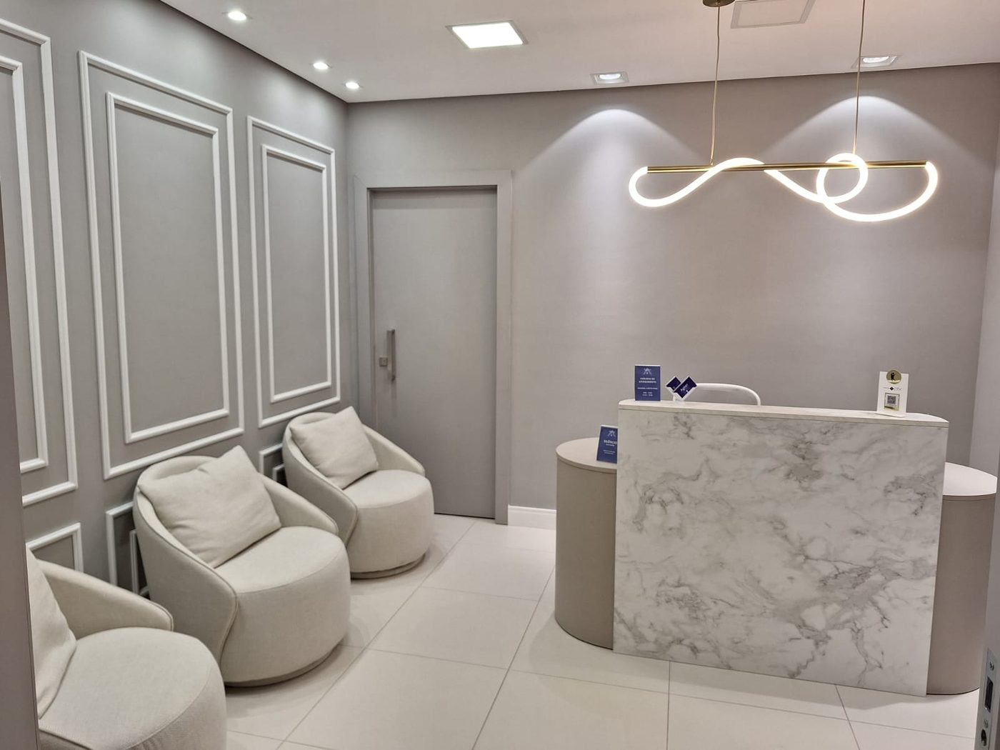
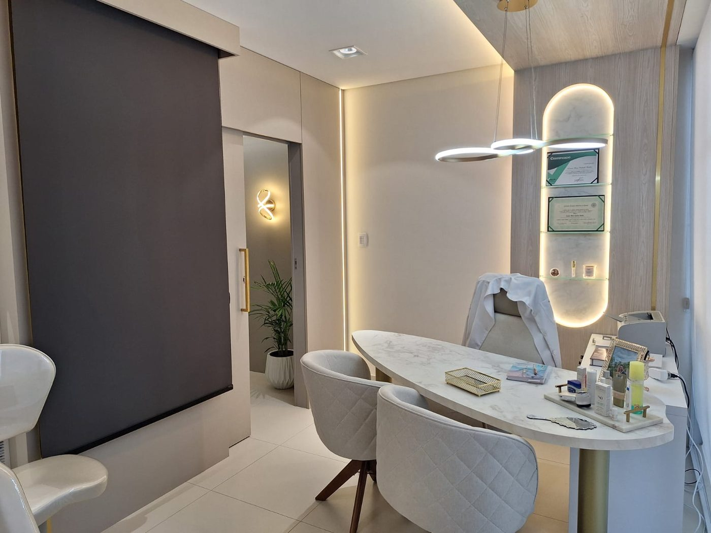
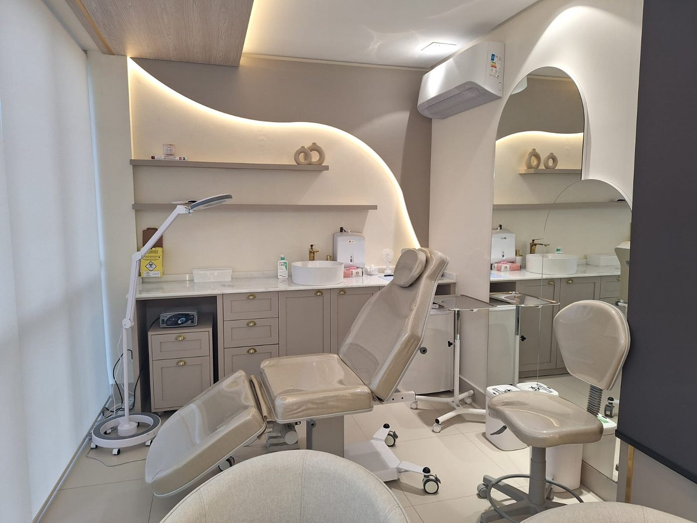

Médica Dermatologista · Guarapuava
Dra. LuaraCabral
Mais do que cuidar da pele, cuidar da pessoa que está por trás dela. Consulta completa de pele, cabelo e unhas, e um plano de tratamento que faz sentido para a sua realidade.
Mais do que cuidar da pele, cuidar da pessoa que está por trás dela. Consulta completa de pele, cabelo e unhas.
Médica · CRM-PR 45.166 · Dermatologista · RQE 37587*
5,0★★★★★no Google · 45 avaliaçõesDra. Luara Cabral · chegando ao consultório
Sobre a Dra.
A boa dermatologia começa antes de qualquer procedimento.
Começa na escuta, em um diagnóstico individualizado e em um plano de tratamento que faz sentido para a sua realidade. É assim que a Dra. Luara descreve o próprio trabalho, e é assim que cada consulta é conduzida.
Médica formada pela Faculdade Evangélica Mackenzie do Paraná, com especialização em Dermatologia pela Santa Casa de Curitiba e aperfeiçoamento em Cosmiatria e Laser em São Paulo.*
Atende todas as idades, com foco em dermatologia clínica, cirúrgica e estética: da acne, do melasma e da queda de cabelo aos procedimentos injetáveis, aos lasers e à remoção de lesões.
- Médica Dermatologista · RQE 37587*
- Dermatologia clínica, cirúrgica e estética, para todas as idades
- Consultório na Clínica Zattar, no Centro de Guarapuava
- 5,0 no Google, com 45 avaliações
* dado a confirmar com a Dra.
Como funciona
Uma consulta completa, não um procedimento solto.
Cada pele tem sua história, ritmo de envelhecimento, queixas e limites. A avaliação individual é indispensável para montar um planejamento personalizado e seguro.
- 01
Escuta
A sua queixa, o seu histórico e a sua rotina de cuidados, sem pressa.
- 02
Exame
Pele, couro cabeludo e unhas, com atenção também ao que você não veio reclamar.
- 03
Diagnóstico e plano
O que faz sentido para o seu caso e para a sua realidade. Procedimento só quando tem indicação.
- 04
Acompanhamento*
Retornos para acompanhar a resposta ao tratamento e ajustar o plano.
O que fazemos
Tratamentos
Cada tratamento tem a sua página: o que é, para quem é, como é feito, cuidados e as dúvidas mais comuns. A indicação é feita na consulta.
Consulta dermatológica completa
Avaliação de pele, couro cabeludo e unhas, para todas as idades. Diagnóstico e plano de tratamento.
Acne, melasma e rosácea
Tratamento das queixas mais comuns da pele, com orientação de cuidados e de produtos.
Queda de cabelo
Investigação da causa e tratamento, com acompanhamento ao longo do tempo.
Bioestimulador de colágeno
Estímulo do próprio colágeno, de forma progressiva, para firmeza, espessura e qualidade da pele.
Toxina botulínica
Suavizar as linhas de expressão mantendo a expressão. Efeito temporário.
Preenchimento com ácido hialurônico
Devolver suporte e proporção ao rosto, respeitando a anatomia. Nunca é sobre colocar mais volume.
Lasers, peelings e microagulhamento
Tecnologias e procedimentos escolhidos conforme a sua pele e a sua queixa.
Remoção de lesões
Lesões benignas e malignas, com avaliação e orientação para a prevenção do câncer de pele.
O que costuma fazer sentido em cada fase
Procedimentos por idade: um ponto de partida, não uma regra.
Um resumo que a própria Dra. Luara publicou para as pacientes. Serve para entender a lógica, não para substituir a consulta.
- 25–35anosManutenção da qualidade da pele
- Toxina botulínica para rugas dinâmicas
- Bioestimuladores leves ou skinboosters
- Laser para melasma e vasinhos, conforme a necessidade
- Peelings para viço
Objetivo: suavizar rugas iniciais e estimular colágeno.
- 35–45anosEstrutura e viço
- Toxina botulínica
- Preenchedores estratégicos: maçã do rosto, têmporas, queixo
- Bioestimuladores de colágeno
- Ultrassom microfocado em algumas indicações
Objetivo: preservar o contorno e prevenir a flacidez.
- 45–55anosFlacidez e perda de volume
- Ultrassom microfocado
- Bioestimuladores mais potentes
- Preenchimentos estruturais
- Lasers fracionados para textura
Objetivo: recuperar sustentação e uniformidade da pele.
- 55+anosReestruturação global
- Ultrassom microfocado combinado a bioestimuladores
- Preenchedores para devolver suporte
- Laser para manchas e textura
- Skincare mais ativo e protocolos contínuos
Objetivo: um rejuvenescimento harmônico e natural.
“Claro que não podemos generalizar. Cada pele tem sua história, ritmo de envelhecimento, queixas e limites. A avaliação individual é indispensável para montar um planejamento personalizado e seguro.” — Dra. Luara Cabral
As perguntas que mais chegam
Procedimento só quando faz sentido para o seu rosto.
Respostas curtas, nas palavras da Dra. Luara, a partir do que ela já explicou no Instagram. O detalhe do seu caso fica para a consulta.
Bioestimulador ou preenchedor?
São coisas diferentes e, muitas vezes, complementares. O bioestimulador estimula a produção de colágeno e melhora a firmeza, a espessura e a qualidade da pele. O preenchedor repõe estruturas que perdemos com o envelhecimento, como o suporte das maçãs do rosto, do queixo e da mandíbula.
Tenho medo de ficar com o rosto artificial.
A ideia nunca é colocar mais volume, e sim devolver suporte e proporção ao rosto, respeitando a anatomia e mantendo o resultado natural.
Bioestimulador injetável e ultrassom microfocado são a mesma coisa?
Não. O ultrassom atua em planos mais profundos, com contração e estímulo de colágeno, e interessa na flacidez de rosto, papada e pescoço. O injetável estimula o colágeno de forma progressiva, na derme. Eles não competem: em muitos casos, a Dra. associa os dois.
Quanto custa a consulta?
O valor da consulta é informado no agendamento, pelo WhatsApp.* Os procedimentos são orçados depois da avaliação, porque dependem do plano.
Nas palavras dela
Como médica dermatologista, eu tento preservar a beleza natural e, muitas vezes, mostrar a beleza que às vezes elas não enxergam.Dra. Luara Cabral · entrevista à Revista Estilo, edição Protagonistas · setembro de 2026
Quem já passou por aqui
5,0
no Google · 45 avaliações · outubro de 2026
As avaliações ficam no Google, onde foram escritas. Trechos só entram no site com a autorização de quem escreveu.
A vista da janela do consultório
O consultório
No Centro de Guarapuava, com vista para a lagoa.
Na Clínica Zattar, no segundo andar, com recepção, consultório e sala de procedimentos. Cada detalhe foi pensado para que você se sinta acolhida, ouvida e respeitada.
- Tv. da Independência, 222, 2º andar (Clínica Zattar) · Centro · Guarapuava/PR · 85010-150
- Segunda a sexta, 9h às 18h*
- Estacionamento gratuito · Entrada acessível · Atendimento com hora marcada



Vamos começar
Comece pela consulta.
É nela que a Dra. entende o seu caso e monta o plano. Sem pressa e sem procedimento por obrigação.